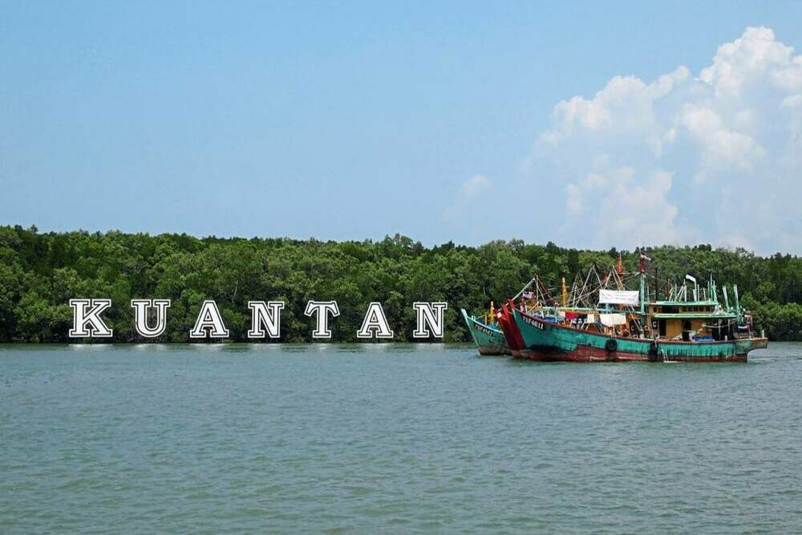

Pahang Darul Makmur
Bukit Gambang Water Park
Genting Highlands
Masjid Sultan Ahmad Shah

Sambal Hitam

Taman Negara
Pahang Darul Makmur is a sultanate and a federal state of Malaysia.
It is the third largest Malaysian state by area and ninth largest by population. The state occupies the basin of the Pahang River, and a stretch of the east coast as far south as Endau.
Geographically located in the East Coast region of the Peninsular Malaysia, the state shares borders with the Malaysian states of Kelantan and Terengganu to the north.
Kuantan
Kuantan is the state capital of Pahang, Malaysia. It is located near the mouth of the Kuantan River. Kuantan is the 18th largest city in Malaysia based on 2010 population, and the largest city in the East Coast of Peninsular Malaysia. It has been expected that Kuantan will be officially declared as a city in 2020
Famous place in Kuantan
| Kuantan River Cruise | Kuantan City Mall |
| Pantai Pelindung | Bukit Gambang Water Park |
| Petrosains Play Smart Kuantan | Pantai Batu Hitam |
| Sungai Cherating | Pantai Teluk Cempedak |
| Bukit Panorama Sungai Lembing | Natural Batik Village |
Rainbow Waterfall
Air Terjun Pelangi (Rainbow Waterfall) is a wonderful natural wonder deep in the Bukit Tapir Forest Reserve. The 30-metre-high waterfall leads down a curtain of water to a deep rock pool. Falls are named for the rainbow effect of sunlight at certain times of the day.
Cameron Highlands
The Cameron Highlands is a district in Pahang, Malaysia, occupying an area of 712.18 square kilometres. Apart from its tea estates,the plateau is noted for its cool weather, orchards, nurseries, farmlands, waterfalls, rivers, lakes, wildlife, mossy forest, golf course, hotels, places of worship, bungalows, Land Rovers, museum and native inhabitants (Orang Asli).
Tioman Island
Tioman Island is a mukim and an island in Rompin District, Pahang, Malaysia. It is located 32 kilometres off the east coast of the state, and is some 39 kilometres long and 12 kilometres wide. It has seven villages, the largest and most populous being Kampung Tekek on the central western coast. The densely forested island is sparsely inhabited, and is surrounded by numerous coral reefs, making it a popular scuba diving, snorkelling, and surfing spot.
National Elephant Conservation Centre Kuala Gandah
The Kuala Gandah Elephant Conservation Centre is an elephant sanctuary located in Temerloh in the state of Pahang, Malaysia. within the Krau Wildlife.